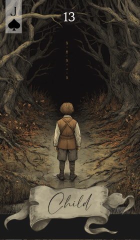

第 13 张 · 黑桃 J
孩童
崭新开始
纯真
好奇
潜力
重新出发
孩童预示某样新事物正在破晓。纯真、潜力，以及重新开始时迈出的头几步，都聚拢在这张牌周围，提醒你新经验里那份好奇与惊喜。
免费抽牌 →
孩童预示某样新事物正在破晓。纯真、潜力，以及重新开始时迈出的头几步，都聚拢在这张牌周围，提醒你新经验里那份好奇与惊喜。
免费抽牌 →孩童代表新的开端、纯真，以及重新出发时那股雀跃。这是一张关于好奇与探索的牌，捕捉的是不带成见、从头开始的状态。无论是一个新项目、一段刚萌芽的感情，还是一个尚在雏形的念头，孩童都鼓励你带着惊奇与开放去摸索。
这张牌讲的不只是开端，还有开端所伴随的纯净与脆弱。它可能提示眼前的局面需要温和对待，也可能说明你正用全新的眼光看事情。孩童常常提醒我们回到简单，不让过往的经验与偏见遮住视线。
在感情里，孩童意味着重新开始，或一段关系进入新的阶段。可能是一段恋情刚擦出火花，也可能是让原有的关系重新拾回玩心的机会。接纳彼此发现时那份天真与欢喜，让心带着好奇与坦率往前走。
在事业上，孩童指向新的项目、机会或学习经历。它鼓励你用初学者的心态面对工作，带着热情迎接挑战，不必害怕犯错。这是成长与积累的阶段，好奇心会带你撞见意想不到的收获。
接纳从头开始的那份干净，敞开手迎接变化。孩童建议你带着惊奇之心过日子，放手尝试，不必怕失败。相信自己的潜力——每一位老手都曾是新手。
与其他牌搭配时，孩童会为「什么正在开始」补上背景，始终在问：这股初生的能量属于哪一段故事。以下是孩童与雷诺曼牌组中其他牌的互动：
传统牌面上是一个年幼的孩子，多半在玩耍或四处张望，画面承载着纯真、好奇，以及重新认识世界时那种单纯的快乐。孩童是开端与成长的象征，凸显重新出发时的简单，以及尚未打磨的潜力。